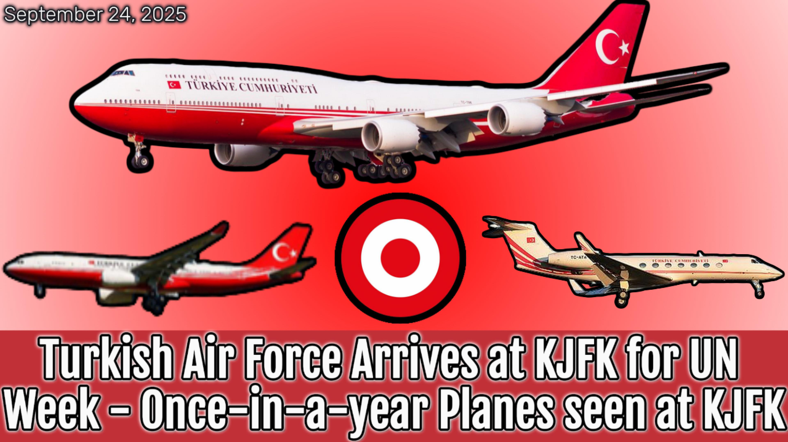
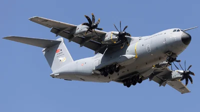
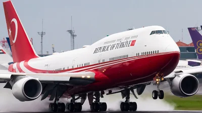
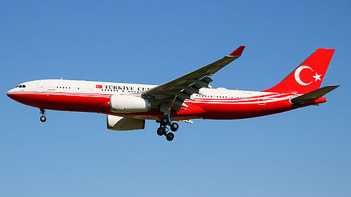
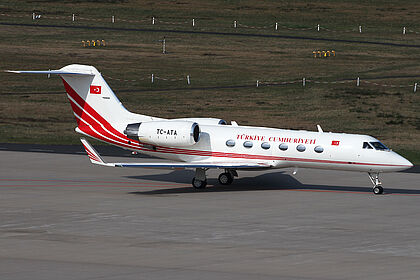

Turkish Air Force Arrives at KJFK for UN Week - Once-in-a-year Planes seen at KJFK

Published September 24, 2025
This report documents the aircraft and ground logistics used by the Government of Türkiye and the Turkish Air Force around the 2025 United Nations General Assembly. It covers the key movements: the A400M military transport that brought vehicles and logistics, VVIP civil-registered jets that carried the President and senior ministers. The primary events spanned 20–24 September 2025.
Key references: United Nations General Assembly — wiki; President Recep Tayyip Erdoğan — wiki; Turkish Air Force — wiki; registration prefixes (TC-) — wiki.
Executive summary
- 20 Sep 2025 — 17-0078 / TUAF157 (Airbus A400M Atlas) arrived from TER to JFK carrying the Turkish motorcade and support equipment.
- 21 Sep 2025 — TC-TRK (TRK1) — Boeing 747-8ZV BBJ — arrived from ISL carrying the President of Türkiye; TC-TUR (TRK2) — Airbus A330 Prestige — arrived from ISL carrying delegates and the Foreign Minister. (Times: 1:09 PM and 1:41 PM EDT)
The remainder of this long-form page examines each movement in depth, describes what these aircraft commonly carry and why they are used for state visits, and gives operational notes for JFK handling of such visits.
17-0078 / TUAF157 — A400M Atlas (military transport) — arrival 20 Sep 2025 (motorcade & logistics)

What was on board: Military logistical personnel, specialized drivers, armored vehicles, secure communications shelters, and equipment needed to support the President's on-ground motorcade and security posture. Military transports such as the A400M are purpose-built to carry heavy vehicles and outsized loads that cannot easily travel by road for international arrivals.
About the Airbus A400M
The A400M Atlas is a tactical airlifter designed to carry armored vehicles, tactical wheeled vehicles, pallets and large cargo. Many nations use the A400M for long-range airlift of government logistics for state visits and operations requiring heavy or bulky equipment.
Operational notes
- Large military transports generally use cargo aprons and require separate clearance and escort to secure staging areas.
- Delivering motorcade vehicles by air reduces local transport exposure and allows the delegation to use ready-made secure transport upon arrival.
- For this visit, the A400M's arrival on 20 Sep ensured that the motorcade and ground equipment were in place prior to the arrival of the President on 21 Sep.
TC-TRK [TRK1] — Boeing 747-8ZV BBJ (VVIP) — arrival 21 Sep 2025, carrying the President

Who was on board: President Recep Tayyip Erdoğan, senior advisors, security detail and necessary communications staff. As a BBJ-configured 747-8, the aircraft serves as a mobile office and secure communications node for the principal.
About the 747-8 BBJ
The Boeing 747-8 BBJ (Boeing Business Jet) combines range, space and discrete secure facilities. It is often used by states when the head of state travels with a large delegation, or when the mission requires in-flight secure communications and extended workspace.
Ground handling & security
- BBJs of this size require secure ramps, close coordination with port authority and local law enforcement, and a dedicated VIP terminal or fenced apron access for boarding and disembarkation.
- The presence of motorcade vehicles (delivered earlier by A400M) and detailed security planning enabled a rapid and protected transfer from JFK to secure staging locations in New York.
TC-TUR [TRK2] — Airbus A330-243 Prestige — arrival 21 Sep 2025, delegation & Foreign Minister

Who was on board: The Turkish Foreign Minister, senior diplomats, technical staff and other members of the delegation who needed to attend the UNGA sessions and associated bilateral meetings.
About the A330 Prestige layout
The A330 in VIP or 'Prestige' configuration provides significant cabin space for meetings, staff work and secure systems. It is often chosen to transport delegations that need onboard workspace between sessions and venues.
Operational notes
- On arrival the A330's passengers typically disembark into secured transfer vehicles for onward movement to diplomatic venues.
- Coordination with host nation protocol teams ensures quick processing and secure transfers to hotels or meeting sites.
TC-ATA (Gulfstream G550) — backup / support VVIP movements

If present for this event, a Gulfstream G550 (civil registry TC-ATA or similar) would have been used to move small groups of advisors, press officers, or to provide short-range repositioning. Because of its flexibility the G550 often operates from VIP ramps and can be staged to join the principal's flights where rapid repositioning is required.
24 Sep 2025
- Empty positioning into JFK — aircraft arrive without passengers to reposition for a planned outbound duty (for example to collect passengers, vehicles or equipment staged at a secure location).
- Outward departure with delegation on the same day — after ground loading, passenger embarkation and security processing, the same aircraft depart JFK later that day carrying the delegation to the next destination (or returning home).
On 24 Sep the civil and/or military aircraft performed empty positioning arrivals and then later departed JFK with the delegation and motorcade — a rapid two-movement turnaround on the same calendar day.
Why a government might do this: schedule constraints, diplomatic events in New York that end mid-day, or secure transport of delegations that requires staging equipment beforehand. Empty positioning can also ease apron/co-ordination constraints at busy airports like JFK.
Full timeline
| Date (EDT) |
Time (EDT) |
Aircraft / Reg |
Flight / Callsign |
Operator |
Route (reported) |
Who / Role |
| 20 Sep 2025 |
1:34 PM |
A400M Atlas — 17-0078 |
TUAF157 |
Turkish Air Force |
TER → JFK |
Motorcade vehicles & logistics (arrived ahead of principal) |
| 21 Sep 2025 |
1:09 PM |
Boeing 747-8ZV BBJ — TC-TRK |
TRK1 |
Government of Turkiye |
ISL → JFK |
President Erdoğan — principal transport |
| 21 Sep 2025 |
1:41 PM |
Airbus A330-243 Prestige — TC-TUR |
TRK2 |
Government of Turkiye |
ISL → JFK |
Foreign Minister & delegates — delegation transport |
| 24 Sep 2025 |
morning / midday |
TC-TRK / TC-TUR / TC-ATA / 17-0078 |
Positioning arrivals (empty) |
Gov. of Turkiye / Turkish Air Force |
various → JFK (empty) |
Empty positioning into JFK per clarified timeline |
| 24 Sep 2025 |
later that day |
TC-TRK / TC-TUR / TC-ATA / 17-0078 |
Departures with delegation |
Gov. of Turkiye / Turkish Air Force |
JFK → various (carrying people) |
Same-day departures carrying the President, delegates, motorcade and support staff |
Logistics recap & notes
- Delivering vehicles and logistics via A400M before principal arrival is standard practice — it ensures armored cars and staging are already in place on arrival.
- Large VVIP civil jets (747 BBJ, A330 Prestige) are typically met with dedicated VIP ramps and escorted motorcades; security coordination is extensive.